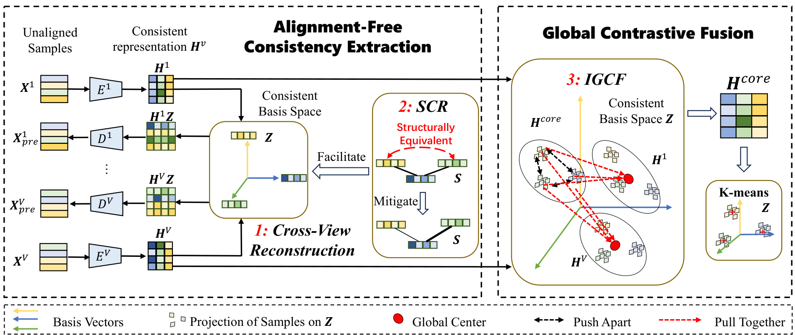
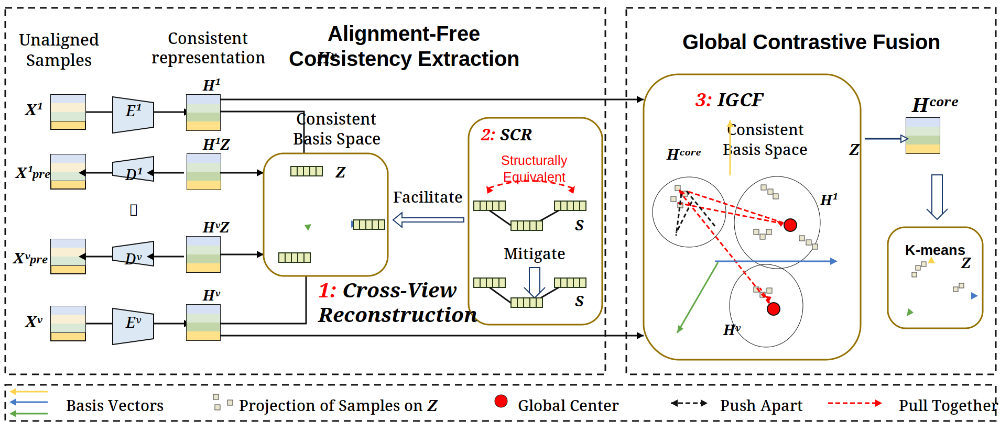
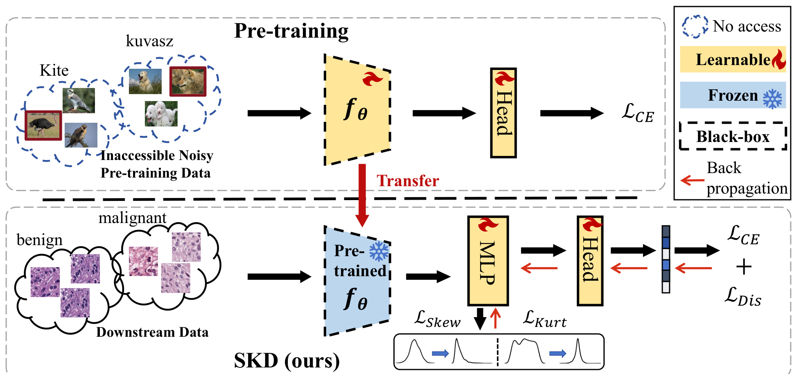
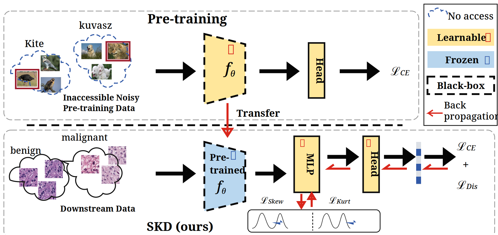
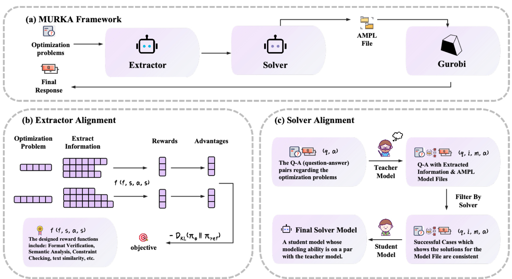
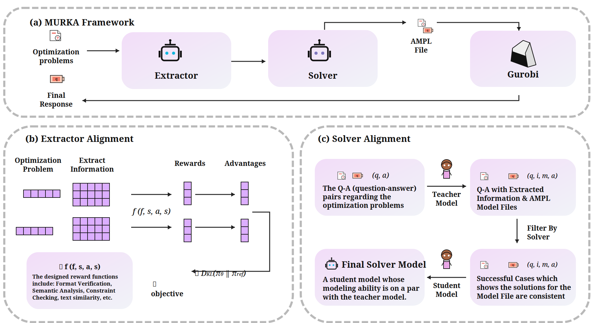
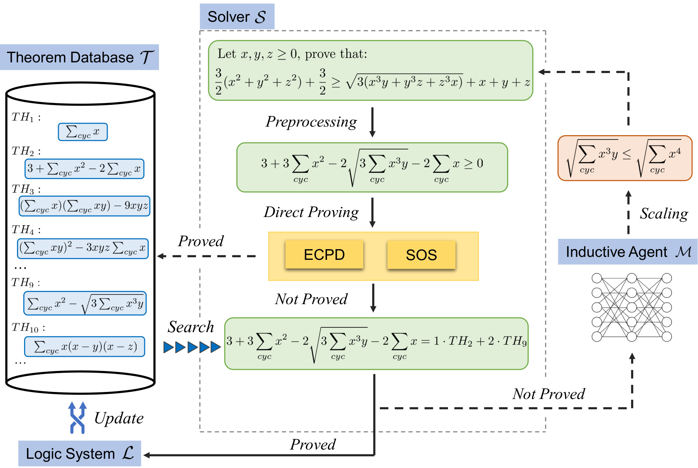
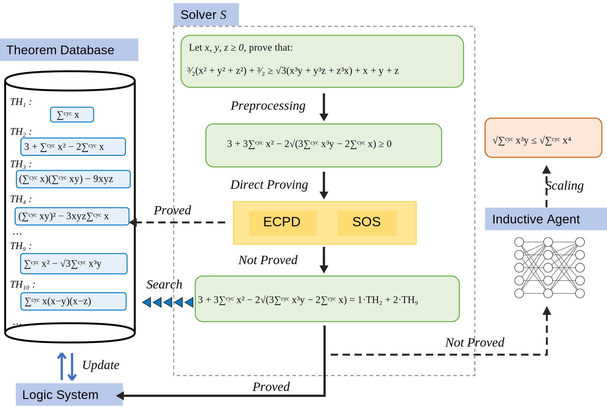
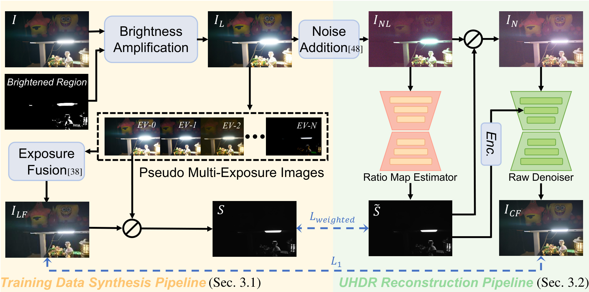
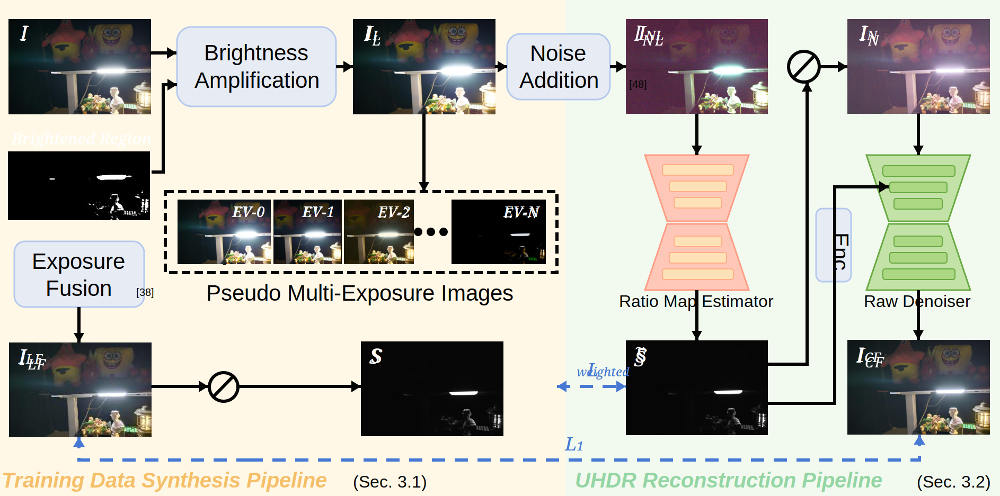

The lower Unidirectional Feature Fusion panel is rendered predominantly light gray with a conspicuous darker strip at its right edge, instead of the uniform medium-gray module background in the ground truth.
3
下方图例项 '= n Swin Transformer Blocks' 过大，溢出到相邻 Point Cloud Unpooling 图例框，图例文字明显碰撞、难读。
The lower legend entry '= n Swin Transformer Blocks' is oversized and spills into the adjacent Point Cloud Unpooling legend box, making the legend text visibly collide and become difficult to read.
4
整张图的连接关系都缺少真值中可见的箭头头，方向性明显减弱，尤其是下方融合流与主编码器/解码器路径。
Connector relationships throughout the diagram lack the visible arrowheads present in the ground truth, substantially weakening directionality, especially in the lower fusion flow and the main encoder/decoder paths.
step_0001 / ref_126 条错误6 个 bboxoverall=0.0hard=0
1. Ground Truth

2. Target（无框）

3. Target + 红框 bbox
123456
4. 错误 visual_summary（中文）
1
所有 H 表征矩阵（包括 H¹、H¹Z、HᵛZ、Hᵛ、Hᶜᵒʳᵉ）都渲染成水平色带，缺少真值中可见的纵向单元格分割。
All H representation matrices, including H¹, H¹Z, HᵛZ, Hᵛ, and Hᶜᵒʳᵉ, render as horizontal color bands without the visible vertical cell divisions present in the ground truth.
2
小的 K-means 面板缺少真值中右侧投影样本附近的红色全局中心标记。
The small K-means panel is missing the red global-center marker shown near the right-side projected samples in the ground truth.
The Hᵛ at the end of the 'Consistent representation' heading is displaced into and overlaps the main 'Alignment-Free Consistency Extraction' title.
4
第二行与第三行样本之间的省略视图标记渲染成小空方块，而不是纵向省略号。
The omitted-view marker between the second and third sample rows renders as a small empty square instead of a vertical ellipsis.
5
一致基空间框内的三条基向量连接线基本缺失：只看到很小的箭头头，黄/蓝/绿向量杆不可见。
The three basis-vector connectors inside the consistent basis-space box are effectively missing: only tiny arrowheads appear, while the yellow, blue, and green vector shafts are invisible.
6
左上融合簇中黑色虚线 'Push Apart' 关系缺少真值中可见的箭头头，方向性变弱。
The black dashed 'Push Apart' relationships in the upper-left fusion cluster lack the visible arrowheads present in the ground truth, weakening their directionality.
The five semantic token nodes d1, d2, d5, d6, and d7 are rendered as plain text without the colored rounded token boxes present in the ground truth.
2
RigFormer 上方的训练火焰标记渲染成不可读的方块字形，而不是火焰图标。
The training fire marker above RigFormer renders as an unreadable square glyph instead of a fire icon.
3
Geodesic-aware Bone Probability Prediction Module 标签比真值更宽更低；最后一行溢出粉色模块框，并与相邻的 L_S 标注重叠。
The Geodesic-aware Bone Probability Prediction Module label is substantially wider and lower than in the ground truth; its final line spills past the pink module box and overlaps the adjacent L_S annotation.
The causal graph card instances do not preserve the ground-truth node states and internal graph markings: blue highlighted nodes, yellow acquirable nodes, dashed relationships, and several node placements/states are missing or replaced by generic black, white, or target nodes.
2
前提矩阵与因果矩阵都渲染成单一平面网格，而真值可见堆叠错位的矩阵层，以表达 K × L 推导结构。
Both prerequisite and causal matrices are rendered as single flat grids, whereas the ground truth visibly shows stacked offset matrix layers conveying the K × L deduction structure.
3
最终状态图被大块实心黑色三角多边形破坏，遮挡了本应出现的图边与节点。
The final-status graph is visibly corrupted by large solid black triangular polygons that obscure the intended graph edges and nodes.
4
前提矩阵缺少可见的行列标签，包括 AC、ACB、AB、BD、BC、AD。
The prerequisite matrix is missing its visible row and column labels, including AC, ACB, AB, BD, BC, and AD.
5
候选解列表遗漏了真值中第一行末与第三行末可见的 BDA token。
The candidate-solution lists omit the BDA token visible in the ground truth at the end of the first row and the end of the third row.
The central agent legend panel is present as an empty rounded box; the GT contains the four-line Planning Agent, Evaluation Agent, Execution Agent, and Local Feedback legend with colored swatches and arrows.
The downward flow connector from Generated Planning to Parse Parameters is absent.
step_0001 / ref_1045 条错误5 个 bboxoverall=0.0hard=0
1. Ground Truth

2. Target（无框）

3. Target + 红框 bbox
12345
4. 错误 visual_summary（中文）
1
所有火焰状态符号（包括顶部模型、下方 MLP 与 Head 模块，以及 Learnable 图例项）都渲染成空的红色描边方块，而不是火焰图标。
All flame status symbols, including those on the top model, lower MLP and Head blocks, and the Learnable legend entry, render as empty red outline squares instead of flame glyphs.
2
冻结状态符号在下方预训练模型与 Frozen 图例中都渲染成空的蓝色描边方框，而不是雪花。
The frozen status symbols render as empty blue outline boxes instead of snowflakes, both on the lower pretrained model and in the Frozen legend entry.
3
No access 图例标记不完整：只画了部分蓝色虚线弧，而不是真值中完整的虚线圆形标记。
The No access legend marker is incomplete: only a partial dashed blue arc is drawn rather than the full dashed circular marker shown in the ground truth.
4
图例中 Back propagation 标签的第二行碰到并被画布右边缘裁切，可读性下降。
The second line of the legend's Back propagation label runs into and is clipped by the right canvas edge, reducing legibility.
The connector arrowheads are substantially oversized relative to the ground truth, producing very large triangular heads on the black forward arrows and red feedback arrows and changing the diagram's connector visual language.
step_0001 / ref_1665 条错误8 个 bboxoverall=0.0hard=0
1. Ground Truth

2. Target（无框）

3. Target + 红框 bbox
11223345
4. 错误 visual_summary（中文）
1
Optimization Problem 的 token 序列画成了 5 个格子，但真值两行都是 6 格序列。
The Optimization Problem token sequences are drawn with five cells, but the ground truth shows six-cell sequences in both rows.
2
奖励函数徽章被替换成不支持的方块字形，而不是可见的奖牌图标。
The reward-function badge is replaced by an unsupported square glyph instead of the visible medal icon.
3
教师插图与真值明显不同：戴眼镜、带思考气泡的紫色教师被替换成棕色简化小人。
The teacher illustration is materially different from the ground truth: the purple glasses-wearing teacher with thought bubble is replaced by a generic brown simplified figure.
4
KL 目标公式开头的减号渲染成方块/缺失字形，公式明显畸形。
The leading minus sign in the KL objective formula is rendered as a square/missing glyph, making the formula visibly malformed.
The connector from the Advantages column to the objective terminates around y=893, crossing the formula, whereas the ground-truth connector reaches the objective line below the formula around y=926.
The concatenation symbol inside the Mixed Prompting Module is rendered as three disconnected square boxes with malformed glyph fragments instead of the chain-link icon shown in the ground truth.
8
Concatenation 图例符号只是一小段残缺曲线字形，不像真值中的链条图标。
The Concatenation legend symbol is only a small partial curved glyph and does not resemble the chain-link icon in the ground truth.
9
从 token 条带到 Head 的连接线明显断开：线大约从 x=1641 开始，而 token 条带约在 x=1612 结束，在 Head 箭头前留下明显空隙。
The connector from the token strip to Head is visibly disconnected: the line begins around x=1641 while the token strip ends around x=1612, leaving a substantial gap before the Head arrowhead.
The clean-observation caption is positioned far too far left: 'Clean obs-ervation' crosses the orange/purple stage boundary and its formula is detached toward the right, weakening attachment to the Clean observation card.
All repeated waveform components are rendered as regular oscillatory sine-like waves rather than the tapered, asymmetric multi-curve waveform forms shown in the ground truth. This materially changes the visual representation of u0, ut, v, the embedding waveform, generation velocity, and the bottom evolution path.
2
翼型组件明显更扁，轮廓与内部曲线结构也与真值不同（中左输入与右下输出皆如此）。
The airfoil components are visibly much flatter and have a different contour and internal curve structure than the ground-truth airfoils, both in the middle-left input and at the bottom-right output.
The flow-matching loss formula is oversized for its pink box and extends well beyond the box into the adjacent generation-velocity area, making the expression visibly malformed and difficult to read.
4
neural-operator 输出标签明显畸形：本应是 uᵢ₊₁(x)，但加号/下标关系不清，索引与 u 视觉分离，不像真值中清晰排版。
The neural-operator output label is visibly malformed: the intended uᵢ₊₁(x) appears with the plus/subscript relationship unclear and the index visually separated from the u, unlike the clearly formatted ground-truth label.
The top-right label is visibly malformed: "World Video" and the V₁ subscript are separated by a large gap, with V₁ extending beyond the image's right edge instead of forming one attached label.
The left mask input symbol beneath laaW-IM renders green instead of the black mask silhouette shown in the ground truth, weakening the intended black-and-white mask visual language.
4
初始化流程中箭头头为亮绿色，而连接杆仍为黑色；与真值一致的黑色箭头风格明显不符。
The arrowheads throughout the initialization flow render bright green while the connector shafts remain black; this is a conspicuous departure from the ground truth's consistent black arrow style.
5
中间 exploration 连接线的箭头头为绿色、杆为黑色，明显破坏连接线样式。
The middle exploration connector arrowheads render green while their shafts remain black, visibly disrupting the connector styling.
6
continuation-flow 箭头头为绿色、杆为黑色，不像真值中统一的黑色箭头头。
The continuation-flow arrowheads render green while their shafts remain black, unlike the uniform black arrowheads in the ground truth.
step_0002 / ref_1303 条错误6 个 bboxoverall=0.0hard=0
1. Ground Truth

2. Target（无框）

3. Target + 红框 bbox
111223
4. 错误 visual_summary（中文）
1
定理数据库标题缺少末尾花体 T 符号；只看到 'Theorem Database'。
The theorem database title is missing the trailing script T symbol; only 'Theorem Database' is visible.
The main theorem statement shows '√3(x³y + y³z + z³x)' with the parenthesized sum outside the radical, whereas the ground truth has the full expression 3(x³y + y³z + z³x) under the square root.
The five blue Search arrows point left toward the theorem database, but the ground truth shows the Search connection pointing right from the database toward the solver's unresolved statement.
The upper [A] mud answer component is rendered with a cyan-filled, cyan-bordered box instead of the GT's pale lavender/white answer box with lavender outline, weakening the intended answer-token styling.
2
上方 [A] mud 答案旁的蓝色喇叭/扩音器图标缺失。
The blue speaker/megaphone icon next to the upper [A] mud answer is missing.
Fire and snowflake status markers throughout the training cards and the Tunable/Frozen legend render as empty square glyphs rather than the intended fire and snowflake symbols, materially damaging the status legend and training-state cues.
4
上方蓝色箭头上的 'Response' 标签是深色而非白色，与箭头对比度降低。
The 'Response' label on the upper blue arrow is dark instead of white, reducing contrast against the arrow.
step_0002 / ref_2816 条错误9 个 bboxoverall=0.0hard=0
1. Ground Truth

2. Target（无框）

3. Target + 红框 bbox
123333456
4. 错误 visual_summary（中文）
1
Brightened Region 图像被纵向裁切/错位：大约从 y=286 开始，而不是真值中约从 y=237 开始的高黑区，导致区域标题落在图像外。
The Brightened Region image is vertically cropped/misplaced: it begins around y=286 instead of forming the tall black region beginning around y=237 in the ground truth, causing the region title to sit outside the image.
2
Brightened Region 标题脱离黑色图像，以白色画在奶油色背景上，对比度与组件附着感大幅下降。
The Brightened Region title is detached from the black image and rendered in white on the cream background, substantially reducing its contrast and attachment to the component.
3
左上中间图像的 I_L 标签下标明显拥挤/重叠，不像真值中干净的下标。
The I_L label on the upper-left intermediate image has a visibly cramped/overlapping subscript compared with the clean subscript in the ground truth.
The [48] citation after Noise Addition is displaced outside the right edge of the Noise Addition box instead of appearing immediately after Addition inside the box.
5
Fusion 后的 [38] 引用被移到词右侧很远，并伸出 Exposure Fusion 框外。
The [38] citation after Fusion is displaced far to the right of the word and extends beyond the Exposure Fusion box.
6
S 与 S̃ 之间的蓝色 L_weighted 标注明显重叠/错位，下标文字与主 L 及虚线连接碰撞。
The blue L_weighted annotation between S and S̃ is visibly overlapped/mispositioned, with the subscript text colliding with the main L and the dashed connector.
The legend associated with Classification (L) is missing: the Normal, Benign, Malignant labels, color markers, braces, and non-cancer/cancer annotations should appear above the lower classification output.
2
缺少从上方 Low-Res. (R) 输出 token 簇到上方 Average Pooling 块的连接线。
Missing connector from the upper Low-Res. (R) output token cluster to the upper Average Pooling block.
The Tool Factory toolbox/wrench icon is rendered as a malformed black geometric shape rather than the recognizable toolbox icon in the ground truth.
2
Grounding DINO 工具图标被替换成空方块字形。
The Grounding DINO tool icon is replaced by an empty square glyph.
3
Initial/Refined Answer 节点只显示裸字母 A，而不是灰色气泡答案组件。
The Initial/Refined Answer node is shown as a bare A rather than the gray speech-bubble answer component.
4
Critical Questions 节点是空白紫色圆角矩形；问题气泡/问号呈现不可见。
The Critical Questions node is a blank purple rounded rectangle; the question-bubble/question-mark presentation is not visible.
5
视频帧序列被大幅简化：真值中堆叠的灰/白帧卡片缺失，只剩稀疏紫色梯形轮廓包着少量栅格裁剪。
The video-frame sequences are materially simplified: the stacked gray/white frame cards visible in the ground truth are absent, leaving sparse purple trapezoid outlines around only a few raster crops.
The Reflection label is misplaced at the lower-right edge of the prediction-flow panel, rather than being positioned beside the reflection icon in the lower-left/middle area.
The Answer, SFT, DPO, and GRPO labels render dark on their colored buttons instead of white, substantially reducing the intended button hierarchy and contrast.
9
上方 critic-result 连接线约在 x=894,625 以箭头结束，到约 x=923 的 Final Answer 分支/节点前留下可见空隙。
The upper critic-result connector ends at an arrowhead around x=894,625, leaving a visible gap before the Final Answer branch/node begins around x=923.